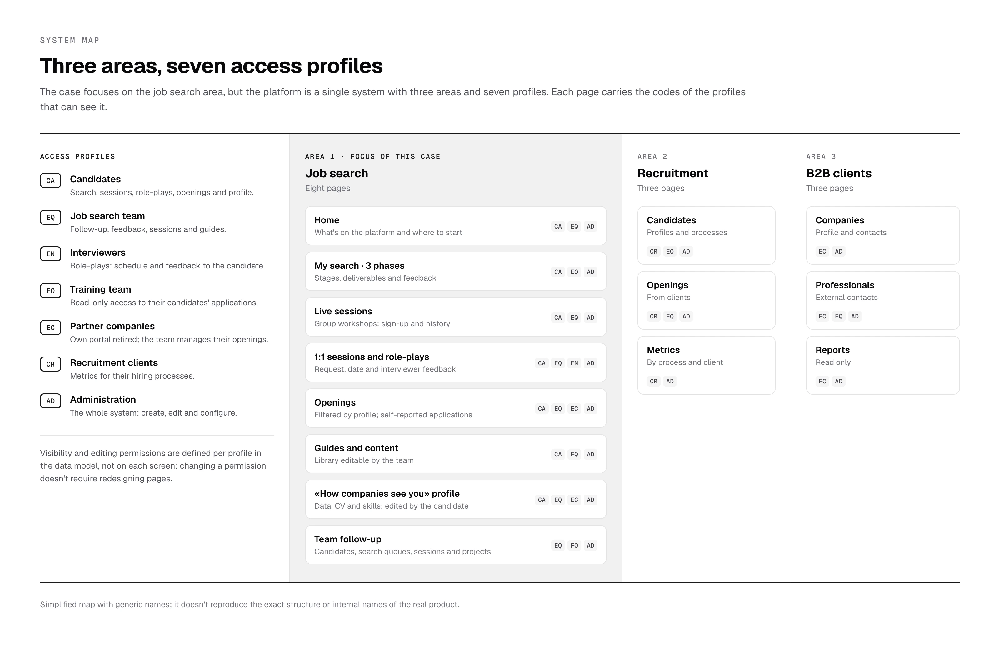
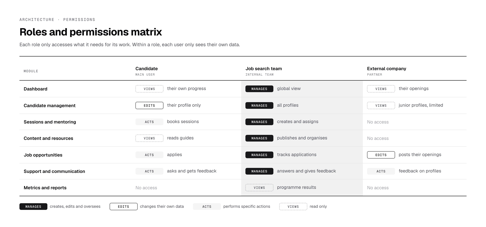
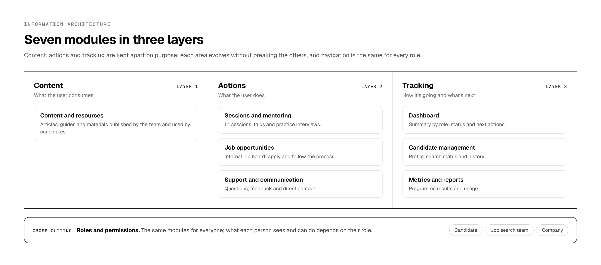
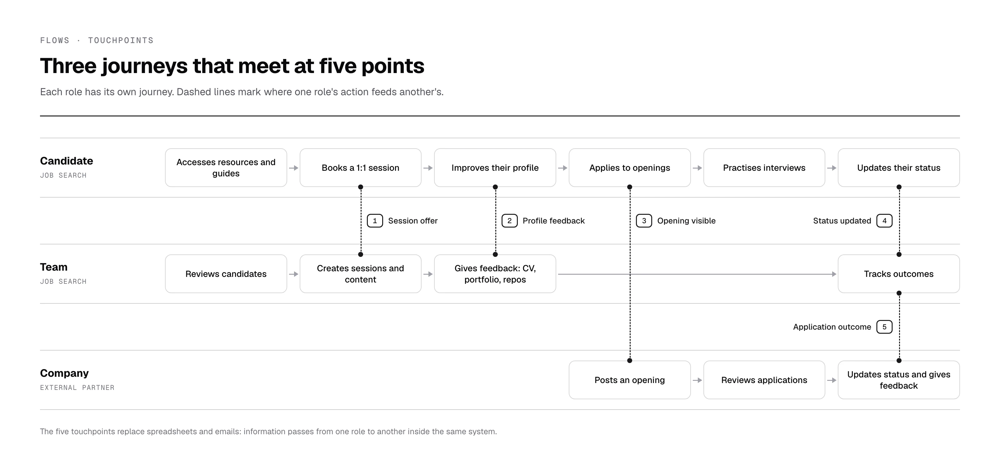
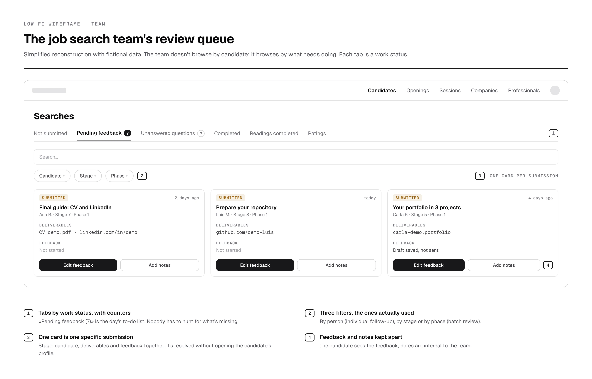
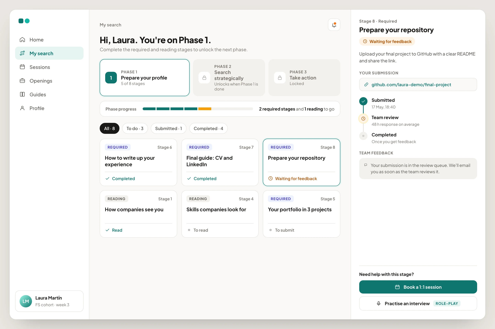
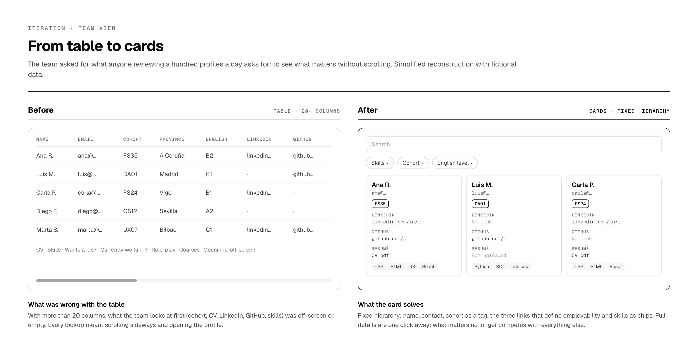

The problem
Employability processes are usually scattered across spreadsheets, emails, documents and disconnected tools. That makes it hard for the team to track each candidate's progress, manage sessions, share resources and provide consistent support. And candidates have no clear structure for what to do, how to improve their profile or how to manage their search.
The challenge: a platform that served both sides at once. Candidates could run their own process, and the team could coordinate, oversee and support them through scalable flows.
My role
I owned the end-to-end design: structure, flows, interface and the implementation in Softr. I worked with the job search team to understand their real workflow, pain points and operational constraints, and translated complex processes into clear, role-based experiences.
Users and roles
The platform was designed for several roles with different goals, responsibilities and permissions. The challenge: getting everyone to work in the same system without interfering with each other or accessing confidential information.

Candidates
Understand where they stand (searching, in process, hired), access resources, apply to openings, book sessions and interview practice, and receive feedback.
Clarity · visible progress · low cognitive loadJob search team
Oversee many candidates at once, create sessions and content, review CVs, portfolios and repositories, answer questions and track programme metrics.
Efficiency · clear dashboards · less manual workPartner companies
Find junior profiles, post openings and send feedback. They had their own portal at launch; today the team manages their openings directly.
First-version role, later retiredPermissions and access control
Each role was designed with specific visibility and editing permissions at page, block and field level. Within the same role, each user only sees their own data.

Information architecture and flows
To reduce complexity and scale, the product was structured into modules shared by all roles, with role-based visibility and actions layered on top. A key decision was to separate content, actions and tracking into distinct modules while keeping the same navigation for everyone.

Three independent journeys (candidate, team and company) that meet at five specific points. Those touchpoints are what replace the spreadsheets and emails: information passes from one role to another inside the same system.

Design decisions
The decisions focused on reducing operational complexity, serving several roles and enabling scalable flows without increasing cognitive load. The two wireframes are simplified reconstructions of each role's main screen.
The candidate: «My search»
The team: review queue

How I'd design it today: «My search» in high fidelity
The wireframe shows the structure; this proposal shows how I'd take it to high fidelity today, with what we learned from candidate ratings. Each submission's status reads as a timeline (submitted, in review, completed) with the average response time, and help lives inside the stage: booking a 1:1 session or practising the interview with role-play without leaving the screen.

Role-based experiences, not a single solution
Each role sees only what's relevant to it, and within a role each person sees only their own data.
Faster onboarding · fewer errors · privacyProgress visibility at the core
Statuses, clear stages and centralised views to know where each candidate stands and what comes next.
Clarity · less back-and-forthContent, actions and tracking kept apart
Each area evolves without breaking the initial structure.
Lower cognitive load · scalabilityEfficiency over aesthetics
An internal tool used daily: legibility, consistent patterns and predictable interactions.
Faster tasks · less frictionDesigned to scale
Reusable patterns and consistent navigation to add roles and features without disrupting what exists.
Long-term maintainabilityA guided path, not a library
The search runs in three locked phases; stages are required or read-only; «submitted» and «completed» are different statuses: the candidate submits, the team closes.
The team's method built into the productWork queues instead of lists of people
Views by status (not submitted, pending feedback, unanswered questions) with counters; candidates see the same statuses.
Zero friction · nothing goes unansweredPragmatism where there's no integration
External applications happen elsewhere. An «I've already applied» button keeps traceability without a single integration.
Data that didn't exist before · zero technical costIteration: the team's candidate view, from table to cards
The first version showed candidates in a table: complete, but with more than twenty columns, the data the team checks every day (cohort, CV, LinkedIn, GitHub, skills) was off-screen or left empty. The feedback was unanimous: «I want to see what matters without scrolling».

I replaced it with cards with a fixed hierarchy (name, contact, cohort as a colour tag, the three links that define employability and skills as chips), with search and filters by skills, cohort and English level. Full details are one click away. On the candidate side there was hardly any negative feedback: the work was adding sections without breaking the structure.
The result of the change, measured
In the platform's analytics I compared nine months with the table (April to December 2025) and nine months with the cards (January to September 2026). Always per person and as a ratio, because the team grew in 2026.
candidate profiles opened per list lookup: from 63 per 100 lookups to 49. What the team needs is now readable on the card.
list lookups per team member: the view became the team's daily workspace.
It's a before-and-after comparison, not a controlled experiment: other things changed in the same period. But both signals point in the direction the redesign was aiming for.
Listening to candidates: a rating at the end of each phase
When they finish each phase of «My search», candidates rate it from 0 to 10 and can leave a comment. The answers reach the team inside the same platform, in their own tab of the work queue, and read together they revealed problems that no other view showed.
They wanted their CV and LinkedIn reviewed before they started applying, not after.
We changedMore people on the team dedicated to reviewing CVs and LinkedIn profiles, so feedback arrives in time.
Some felt alone in the self-guided phases and needed to apply the advice to their own situation.
We changedThe 1:1 session process was improved and a role-play section was added to practise interviews.
There were broken links in the guides, especially in the Git section.
We changedEvery link in the content was reviewed and fixed.
Everything candidates pointed out was reviewed and changed. It's the part of the system I like most: the product doesn't just guide candidates, it also gives them a channel to say what isn't working.
«I've been able to work with the platform Sandra designed and built for me and my team, and honestly I'm very happy with it. It isn't just a tool for us, it's also used by the candidates who are actively looking for a job. Every request we have, whether ours or the candidates', is heard and handled by her, always taking into account all the users' opinions. Thanks to her, the work is more comfortable and the processes are more agile for everyone. Of course, there's always room for improvement, but it's a tool that keeps evolving with us and helps us in our daily work.»
Results and learnings
A scalable B2B SaaS solution that supports candidates and the team through structured, role-based flows, in use since early 2024. Designed and built by one person, with no development team.
This project reinforced the importance of designing systems, not just interfaces: clarity, permissions and scalability in multi-role environments. And of making product decisions that balance each user's needs with real constraints.
What I'd do differently
The table with more than 20 columns reached daily use, and it was the team's feedback that changed it. Today I'd show wireframes to two or three team members before building the view.
I know how many people use the platform, but I didn't measure the team's response time or the queue of pending submissions before and after. Without that baseline, the impact of the work queues is hard to prove.